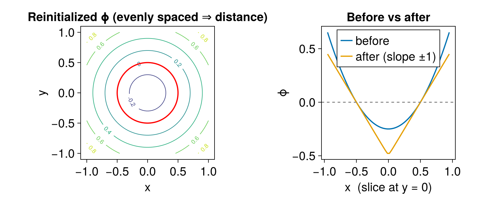
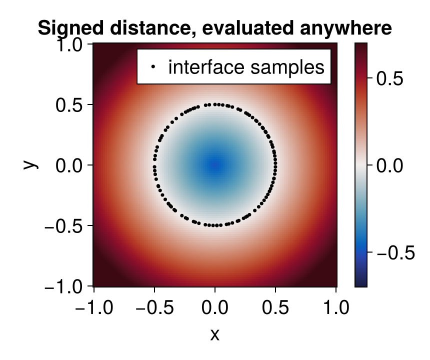

Closest-point reinitialization
A signed distance function (SDF) is a level set with the extra property $|\nabla\phi| = 1$: $\phi(x)$ is the distance from $x$ to the interface, negative inside and positive outside. Curvature, normals, and the width of a narrow band all behave best when $\phi$ is (close to) an SDF, but advection and other terms steadily distort it. Reinitialization restores the signed-distance property while leaving the zero level set in place.
This package offers two routes:
reinitialize!(this page, recommended): a geometric method that samples the interface, builds a KD-tree, and computes the signed distance to high order with a Newton closest-point solve, following Saye [4]. It converges in a single pass.EikonalReinitializationTerm: a PDE-based alternative that evolves $\phi_t + \operatorname{sign}(\phi)(|\nabla\phi| - 1) = 0$ using the ordinary time-stepping machinery. It is documented with the other level-set terms.
Reinitializing a level set
Call reinitialize! on a MeshField to restore the signed-distance property in place. Below, $\phi = x^2 + y^2 - r^2$ describes the right circle but is not a distance function — its slope grows with radius — and reinitialization turns it into one without moving the zero contour:
using LevelSetMethods
using CairoMakie
using StaticArrays
grid = CartesianGrid((-1, -1), (1, 1), (64, 64))
ϕ = MeshField(x -> x[1]^2 + x[2]^2 - 0.5^2, grid; bc = LinearExtrapolationBC())
before = InterpolatedField(copy(ϕ), 1) # snapshot, to compare slices
reinitialize!(ϕ)
after = InterpolatedField(ϕ, 1)
xs = ys = range(-1, 1; length = 64)
levels = -0.2:0.2:0.8
LevelSetMethods.set_makie_theme!()
fig = Figure(; size = (820, 340))
axc = Axis(fig[1, 1]; title = "Reinitialized ϕ (evenly spaced ⇒ distance)", aspect = 1,
xlabel = "x", ylabel = "y")
contour!(axc, xs, ys, values(ϕ); levels, labels = true)
contour!(axc, xs, ys, values(ϕ); levels = [0.0], color = :red, linewidth = 2)
axs = Axis(fig[1, 2]; title = "Before vs after", xlabel = "x (slice at y = 0)", ylabel = "ϕ")
r = range(-0.95, 0.95; length = 200)
lines!(axs, r, [before(SVector(x, 0.0)) for x in r]; label = "before", linewidth = 2)
lines!(axs, r, [after(SVector(x, 0.0)) for x in r]; label = "after (slope ±1)", linewidth = 2)
hlines!(axs, 0; color = :gray, linestyle = :dash)
axislegend(axs; position = :ct)
fig
After reinitialization the contours are evenly spaced — the level $\phi = c$ sits a distance $c$ from the interface — and the radial slice is a straight $V$ of slope $\pm 1$ instead of a parabola. The kink at the centre is genuine: an SDF is not differentiable on the medial axis (here, the single point equidistant from the whole circle).
Both curves cross zero at the same place, so the interface itself is preserved. Concretely, the reinitialized field matches the exact circle distance everywhere:
exact(x) = hypot(x...) - 0.5
max_er = maximum(i -> abs(ϕ[i] - exact(getnode(grid, i))), eachindex(grid))
println("maximum error vs. exact distance: $max_er")maximum error vs. exact distance: 9.327796202107663e-9Distances are measured to the interpolated interface, so the zero level set is preserved to the order of the interpolant, not exactly. This is far below the discretization error of the rest of the scheme, but it is not bit-for-bit invariance.
Reinitializing during a simulation
Reinitialization is not built into the equation; it is driven from a posthook passed to integrate!, which runs after every accepted step. The simplest hook reinitializes on every step:
integrate!(eq, tf; posthook = eq -> reinitialize!(current_state(eq); upsample = 4))Because the hook is an ordinary function, you decide when to reinitialize — on a step counter closed over by the hook, on the elapsed current_time(eq), or on a measured drift of $|\nabla\phi|$ from one. Each call rebuilds the interface sampling, KD-tree, and per-node solve from scratch, so it is not free; reinitializing every few steps is usually enough to keep $\phi$ well-behaved.
A reusable signed distance function
Under the hood, reinitialize! builds a LevelSetMethods.NewtonSDF and writes its values back onto the grid. You can also keep that object and evaluate the signed distance at arbitrary points, without touching the level set — useful when an SDF is an ingredient in a larger computation (measuring clearances, seeding a velocity extension, querying off-grid):
sdf = LevelSetMethods.NewtonSDF(ϕ; upsample = 2)
d0 = sdf(SVector(0.0, 0.0)) # distance from the origin to the circle (≈ -0.5)
d0-0.49999943571948086The interface sample points behind the KD-tree are available through LevelSetMethods.get_sample_points. Evaluating the object on a grid finer than the original shows that it really is a continuous distance field, anchored on those samples:
pts = LevelSetMethods.get_sample_points(sdf)
fine = range(-1, 1; length = 120)
D = [sdf(SVector(x, y)) for x in fine, y in fine]
fig = Figure(; size = (430, 360))
ax = Axis(fig[1, 1]; aspect = 1, xlabel = "x", ylabel = "y",
title = "Signed distance, evaluated anywhere")
hm = heatmap!(ax, fine, fine, D; colormap = :balance, colorrange = (-0.7, 0.7))
sub = pts[1:6:end]
scatter!(ax, first.(sub), last.(sub); color = :black, markersize = 5, label = "interface samples")
axislegend(ax; position = :rt)
Colorbar(fig[1, 2], hm)
fig
NewtonSDF is safe to evaluate concurrently from multiple tasks: its interpolant keeps one scratch buffer per task, and the KD-tree and sample points are read-only during evaluation. This is what lets reinitialize! fill the grid in parallel.
Accuracy and cost
Both reinitialize! and NewtonSDF accept the same keywords, which trade accuracy against work:
| keyword | controls | raise it when |
|---|---|---|
order | polynomial degree of the local interpolant used for the closest-point solve | you need higher-order accuracy near a curved interface |
upsample | density of interface samples seeding the KD-tree | the interface is under-resolved or finely featured |
maxiters, xtol, ftol | Newton solver stopping criteria | the solver reports non-convergence |
Both work on a full-grid MeshField and on a narrow-band field; in the latter case only the active nodes are reinitialized. If the solver fails to converge at some nodes — typically far from the interface, near the domain corners — reinitialize! warns and leaves a best-effort distance there.